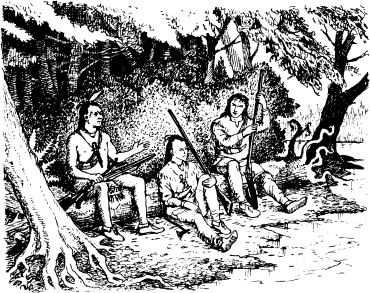

2
迷路森林
三暗人佇 Fort Edward 西方幾哩的金邊溪頭歇睏。其中兩個是印第安人，一個是白人。Chingachgook 和伊的囝- Uncas，是莫希根人。白人是一位叫做 Hawk-eye 的偵查員。Hawk-eye 帶一支長獵槍。
三暗人佇鬥陣共款。
‘阮的部落是歷史上頂頂悠久的印第安部落。’Chingachgook 共：‘莫希根的本家血脈佇阮的身軀內。好幾冬前，阮的部落搬到特拉瓦人所在的地點。’

‘那些冬天的花佇佗位？’Chingachgook 共：‘通死去了。阮死後， Uncas 將會是最後一個莫希根人。’
予恁聽聲。伊通予恁轉去。Hawk-eye 提起伊的槍。‘是誰？’伊共。
Duncan Heyward 騎馬出來森林。Cora 和 Alice 跟佇後頭。
‘阮是英國軍官。’Duncan 共：‘阮從 Fort Edward 來。遘 Fort William Henry 愛行幾耐？’
Hawk-eye 笑出來。‘Fort William Henry？恁行錯邊啦。’伊共：‘恁佇 Glenn’s Falls 附近。’
‘行錯邊！’Duncan 共：‘這表示阮迷路矣。但是阮的印第安嚮導──’
‘恁有印第安嚮導，但是迷路佇森林？’Hawk-eye 共：‘這實在真奇怪。伊是特拉瓦人嗎？’
‘伊叫做 Magua。伊是休倫人。’Duncan 共：‘但是伊和莫霍克人住，又是一个英國人的嚮──’
‘休倫人！’Hawk-eye 講：‘恁相信莫希根人，特拉瓦人無錯。但是恁會當相信休倫人！恁的嚮導會帶恁去伊的好友面前。伊通會殺死恁。予阮會著伊。’
Magua 佇 Cora 的馬後頭站。 Hawk-eye 看伊。然後伊行去和 Chingachgook、Uncas 共款。
Hawk-eye、Chingachgook、Uncas 走去追伊。但是 Magua 走脫矣。
‘阮愛怎樣辦？’Duncan 心內想：‘阮迷路矣。’
伊轉去共 Hawk-eye：‘恁愛帶阮去 Fort William Henry 嗎？’伊問：‘阮會予恁錢。’
Hawk-eye 看 Cora 和 Alice。‘阮會帶恁去。’伊共 Duncan：‘錢物啥物攏無要緊。阮袂愛將恁和這兩個查某囡仔置佇遐。Magua 和伊的休倫朋友會著恁。予阮來──予阮來。’
Duncan 和 Hawk-eye 和 Cora 及 Alice 共款。兩位姊妹離開自己的馬。莫希根人牽馬離開。
‘伊通會將馬藏起來到明早。’Hawk-eye 共。伊從溪邊的長草中搬一隻獨木舟。‘落來獨木舟。’伊共：‘阮會去山洞，今仔日會佇遐過暝。’
Duncan、Cora 和 Alice 入去獨木舟。Hawk-eye 將獨木舟推去溪正中央。然後伊落去獨木舟。伊開始沿著溪划。伊通予恁聽著大瀑布的聲前頭，就是 Glenn’s Falls。
幾分鐘後，伊通看見瀑布。

Alice 驚著矣。伊合起來伊的目珠。

過幾分鐘， Hawk-eye 帶 Chingachgook 和 Uncas 轉來。這偵查員帶所有的人到瀑布後頭的山洞。山洞深又窄，又暗。 Hawk-eye 立馬生火。
Alice 看著高頭大漢的莫希根人，Uncas。
‘一個結實的漢在保護阮。’伊細聲和伊的姊講：‘阮今仔日一暝會平安的。’